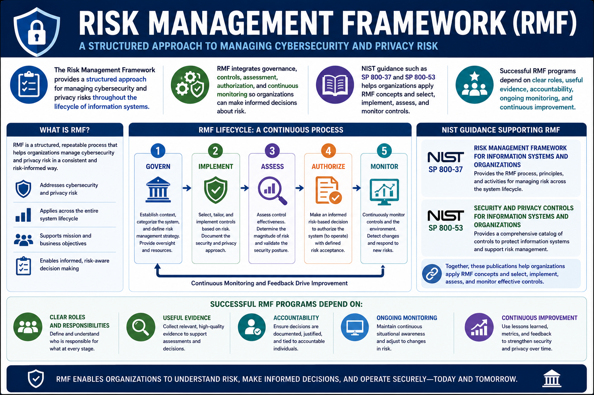

What Is RMF?
Course Summary
Connecting to LMS... Progress: in progress
Version 1.0 | Date: 2026-06-16 | Educational overview of Risk Management Framework concepts.

Narration
The Risk Management Framework provides a structured approach for managing cybersecurity and privacy risks throughout the lifecycle of information systems.
RMF integrates governance, controls, assessment, authorization, and continuous monitoring so organizations can make informed decisions about risk.
NIST guidance such as SP 800-37 and SP 800-53 helps organizations apply RMF concepts and select, implement, assess, and monitor controls.
Successful RMF programs depend on clear roles, useful evidence, accountability, ongoing monitoring, and continuous improvement.